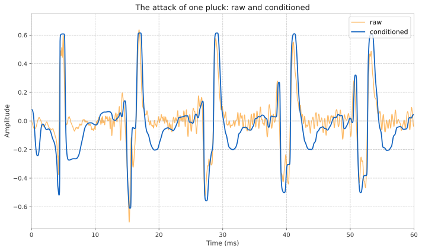

Signal Conditioner
Overview
signal_conditioner preprocesses and enhances a signal for analytical processes such as onset and pitch detection. Raw instrument signals are rarely clean enough to hand straight to a detector: they carry sub-band rumble, wide dynamic swings, transient spikes, and low-level noise or string bleed between notes. signal_conditioner bundles the front-end chain that tames all of these into a single reusable stage, so a detector downstream sees a stable, well-behaved envelope.
It is a composite: a fixed pipeline of Q building blocks wired in a fixed order, exposing one float operator()(float) for per-sample processing and a small set of accessors for the internal envelopes and gate state. The chain is:
-
High pass → Dynamic smoother → Pre clip → Envelope → Noise gate → Compressor + makeup gain
-
High pass (
High Pass Filter, 2nd-order Butterworth atlowest_freq) removes sub-band rumble and DC below the lowest note of interest. -
Dynamic smoother (
Dynamic Smoother, centered betweenlowest_freqandhighest_freq) suppresses noise while preserving edges, cleaning the waveform without smearing attacks. -
Pre clip (
Clip,hard_clipatpre_clip_level) shaves off transient spikes that would otherwise dominate the envelope. -
Envelope (
Fast Envelope Followerfeeding aPeak Envelope Follower) tracks the signal level. This envelope drives both the gate and the compressor. -
Noise gate (
Onset Gate, smoothed by anAR Envelope Follower) mutes the signal between notes, rejecting bleed and low-level noise while letting fast attacks through. The boolean gate is smoothed into a gain to avoid clicks. -
Compressor + makeup gain (
Compressordriven by the envelope indecibel, plus a linear makeup gain) evens out the dynamics so the detector sees a consistent level.
-
The smoothed signal, before the clip and compressor, is available through the smoothed() accessor. The clip flattens crests into plateaus and the compressor’s time-varying gain shifts crest apexes in time, so analyses that depend on accurate peak timing (peak picking, period measurement from peak spans) read this tap; level-driven detectors read the conditioned output.
The gate thresholds can be adjusted at runtime (see Thresholds), which is useful when the noise floor or playing dynamics change.
The figure below overlays a few cycles of a low E pluck’s attack (from the test corpus), raw against conditioned, on a shared axis. The raw pluck has sharp transient spikes and high-frequency hash; the conditioner cleans the hash (high pass and dynamic smoother), tames the spikes (pre-clip), and lifts the level (makeup gain), while preserving the periodic structure a detector keys off. Across a whole phrase the gate additionally mutes the quiet spans between notes.

signal_conditioner is a preprocessing aid for analysis, not an audio effect. Its output is shaped for downstream detectors; it is not intended as a signal you would listen to directly.
|
Declaration
class signal_conditioner
{
public:
struct config
{
// Pre clip
decibel pre_clip_level = -10_dB;
// Compressor
decibel comp_threshold = -27_dB;
float comp_slope = 1.0/6;
float comp_gain = 10;
// Gate
duration attack_width = 500_us;
decibel gate_onset_threshold = -24_dB; // fast-open level
decibel slope_threshold = -45_dB; // rise over attack_width
decibel gate_release_threshold = -55_dB;
duration gate_release = 10_ms;
};
template <typename Config>
signal_conditioner(
Config const& conf
, frequency lowest_freq
, frequency highest_freq
, float sps
);
float operator()(float s);
bool gate() const;
float gate_env() const;
float pre_env() const;
float signal_env() const;
float smoothed() const;
void onset_threshold(decibel onset_threshold);
void release_threshold(decibel release_threshold);
void onset_threshold(float onset_threshold);
void release_threshold(float release_threshold);
};Expressions
Notation
conf-
An object satisfying the
configlayout (see below). lowest_freq-
Object of type
frequency; the lowest note of interest. highest_freq-
Object of type
frequency; the highest note of interest. sps-
Floating point value representing samples per second.
sc-
Object of type
signal_conditioner. s-
A
floatinput sample. ot,rt-
Onset and release thresholds, as
decibelorfloat.
Configuration
The constructor is a template on Config, so any type with the same member layout as signal_conditioner::config will do; the built-in config provides sensible defaults. The members are:
| Member | Default | Semantics |
|---|---|---|
|
|
Hard-clip ceiling applied after smoothing, to shave transient spikes. |
|
|
Compressor threshold. |
|
|
Compressor slope (compression ratio is |
|
|
Linear makeup gain applied after compression. |
|
|
Time window over which the gate measures envelope rise. |
|
|
Level that opens the gate immediately (fast-open). |
|
|
Required envelope rise over |
|
|
Level below which the gate closes. |
|
|
Gate release smoothing time. |
See Onset Gate for the level-versus-slope gating logic and Compressor for the slope and threshold semantics.
Constructor
| Expression | Semantics |
|---|---|
|
Construct a |
C++ brace initialization may also be used, e.g. q::signal_conditioner{conf, f, f*4, sps}.
|
Function Call
| Expression | Semantics | Return Type |
|---|---|---|
|
Process one input sample |
|
Accessors
| Expression | Semantics | Return Type |
|---|---|---|
|
|
|
|
The smoothed gate gain (0 to 1). |
|
|
The signal envelope before the gate and compressor (the raw tracked level). |
|
|
The signal envelope after the gate and compressor gain (the level of the output). |
|
|
The smoothed signal before the clip and compressor, for peak-timing analyses. |
|
Thresholds
The gate thresholds may be updated at runtime. Each is available in both decibel and linear (float) forms, and both delegate to the internal Onset Gate.
| Expression | Semantics |
|---|---|
|
Set the gate onset (fast-open level) threshold, as |
|
Set the gate release threshold, as |
Example
// Condition a signal for pitch detection over a guitar's range.
auto f = q::pitch_names::E[2]; // lowest note of interest
auto conf = q::signal_conditioner::config{};
auto sig_cond = q::signal_conditioner{conf, f, f * 4, sps};
for (auto s : in)
{
auto clean = sig_cond(s); // conditioned sample
// ... feed `clean` to a pitch or onset detector ...
}